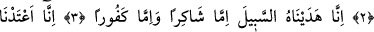

BİZ İNSANI KATIŞIK
BİR NUTFEDEN YARATTIK
Bismillâhirrahmânirrahîm
1. İnsanın üzerinden, henüz kendisinin anılan bir şey olmadığı uzun bir süre
geçmedi mi?
2. Gerçek şu ki, biz insanı katışık bir nutfeden (erkek ve kadının dölünden)
yarattık; onu imtihan edelim diye, kendisini işitir ve görür kıldık.
3. Şüphesiz biz ona (doğru) yolu gösterdik. İster şükredici olsun ister nankör.
4. Doğrusu biz, kâfirler için zincirler, demir halkalar ve alevli bir ateş hazırladık.
1) “Hel etâ” şeklinde başlayan ifâde, bir yandan “istifhâm-ı takrir/kabul ettirme sorusu”,
diğer yandan “takrib/yaklaştırma” anlamı ifâde eder. Arapçada soru anlamı ifâde eden
“hel” edâtı “kad” anlamına da gelebilir. Nitekim burada o anlamdadır. Bu açıklamalar
ışığında ifâde; “e hel etâ” yâni “kad etâ/mutlaka geldi” takdirindedir. İfâde bu şekle
gelirken “hel” edâtından önceki “elif” hazfedilmiştir. Çünkü elif ancak istifham
olduğunda ifâdede yer alır. “Hel” edâtı “kad” anlamına geldiğinde istifham edâtı ya
lafzen ya da takdîren mevcuddur. Ki böylece “takrir/kabul ettirme” anlamı istifham
hemzesinden, “takrib/yaklaştırma” anlamı da “kad” edâtından anlaşılmış olsun.
“Kad” edâtı mâziyi hâle yâni şimdiki zamana yaklaştırmak için getirilir. Öte yandan
bu âyet-i kerîmede her ne kadar istifham hemzesini takdir etmiş olsak da istifham anlamı
kasdedilmiş değildir. Çünkü Allah Teâlâ’nın soru sorması muhaldir. Zira soru
bilinmeyen bir şeyin öğrenilmesi için sorulur. Allah Teâlâ ise “bilmediği bir şeyi
sormaktan” münezzehtir. O hâlde bu ifâdenin mutlaka “ihbar/haber verme” ifâdesi
olarak alınması gerekir. Nitekim böylesi ifâdelerin arap dilinde benzerleri vardır. Söz
gelimi herhangi bir kimseye: “Ben sana öğüt verdim mi?” dediğinde maksadın hitâb
ettiğin kişiye öğüt verdiğini itirâf ettirmektir; yoksa soru sormak değildir. Ayrıca “hel”
inkâr anlamına da gelebilir. Sözgelimi herhangi bir kimseye dönüp de “bunun benzerini
hiç kimse yapabilir mi?” diye sorsan burada da kasdın soru sormak değildir. Tam